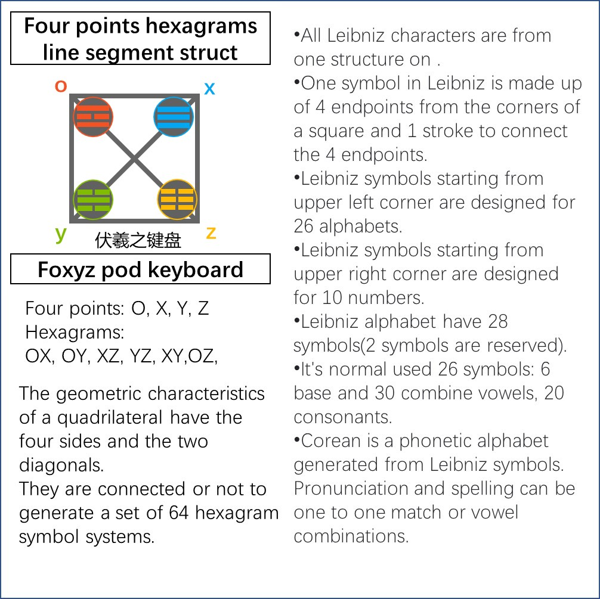
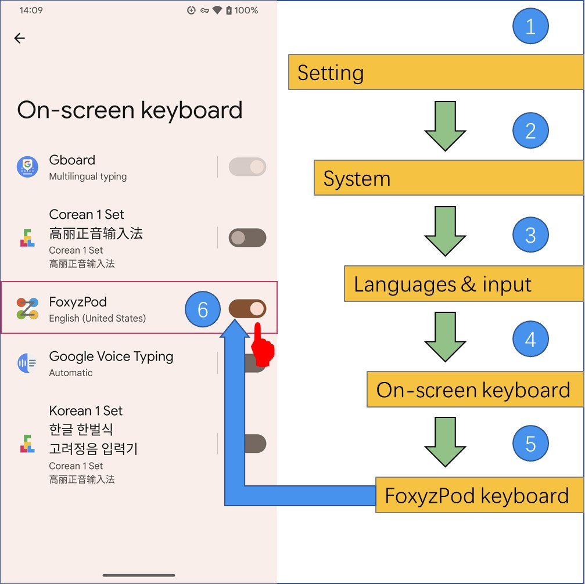
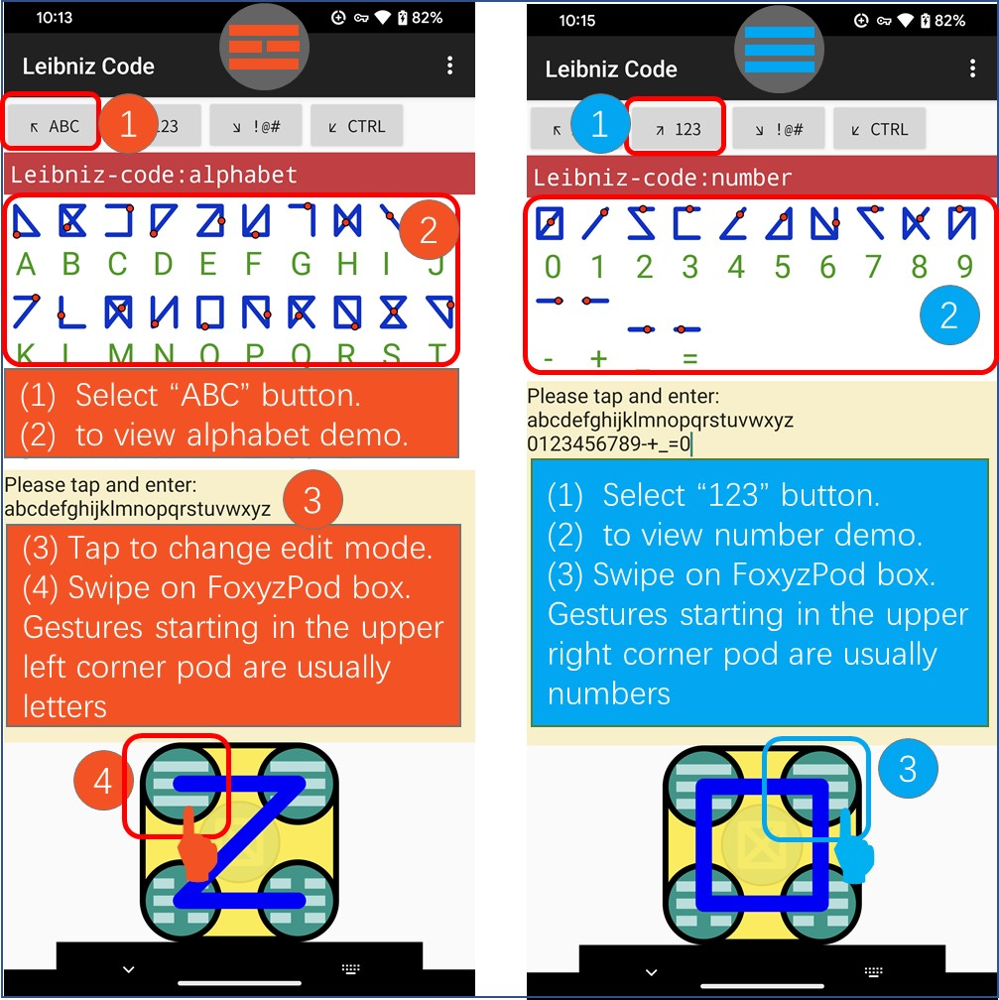
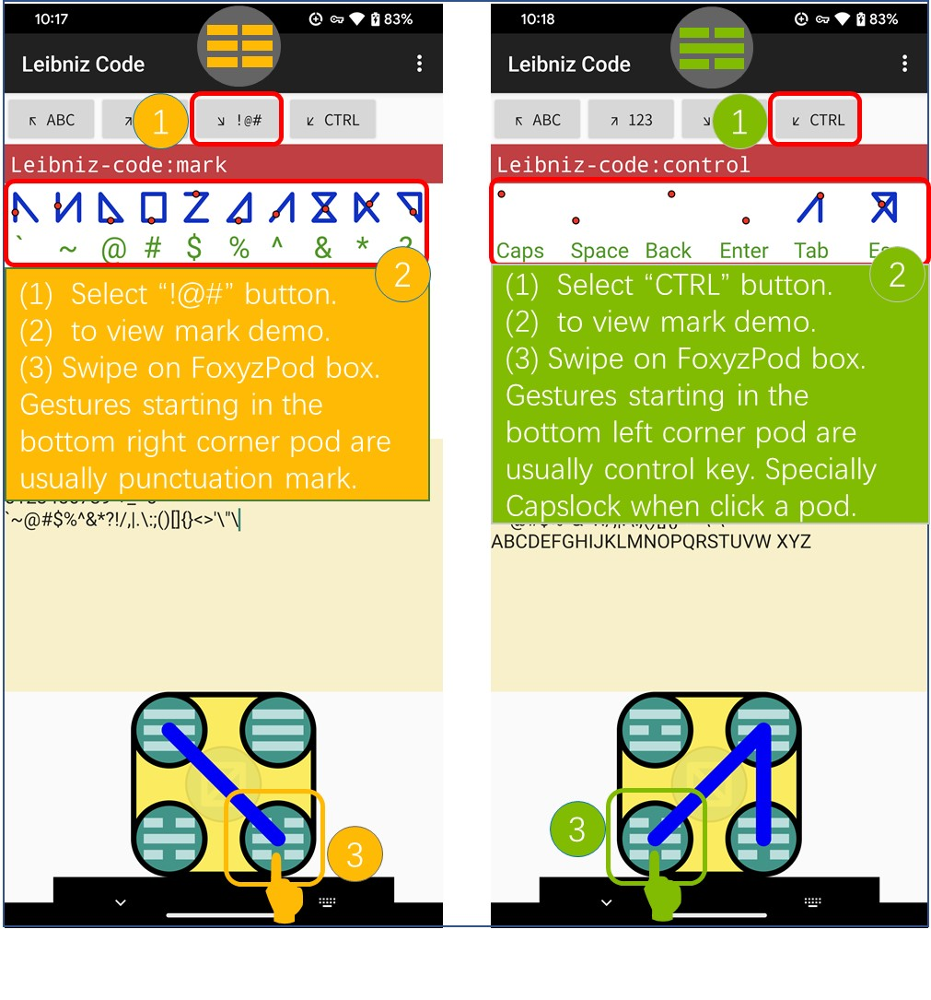
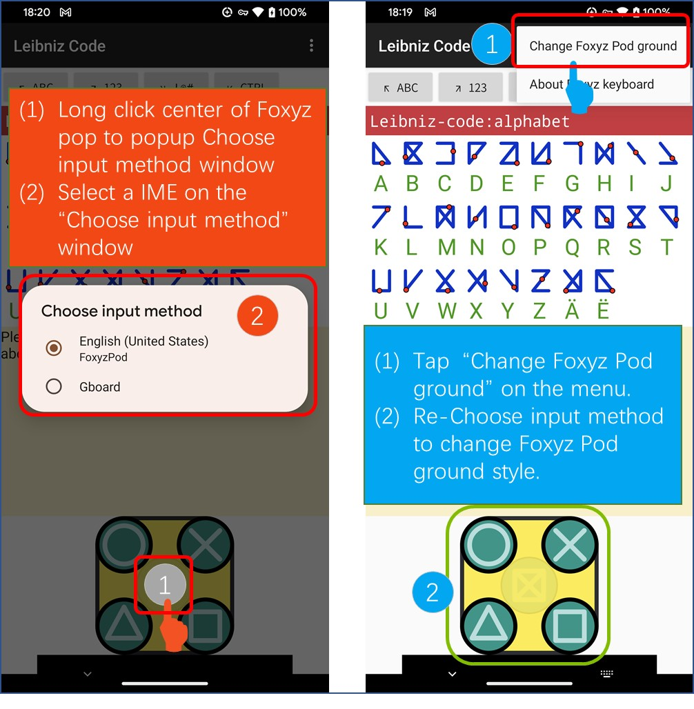
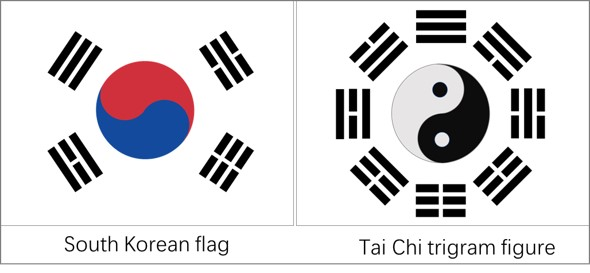
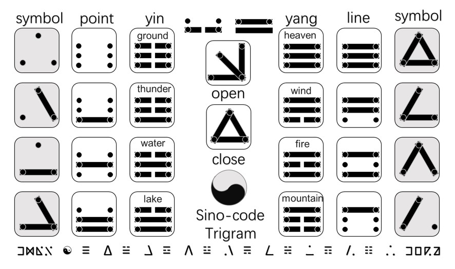
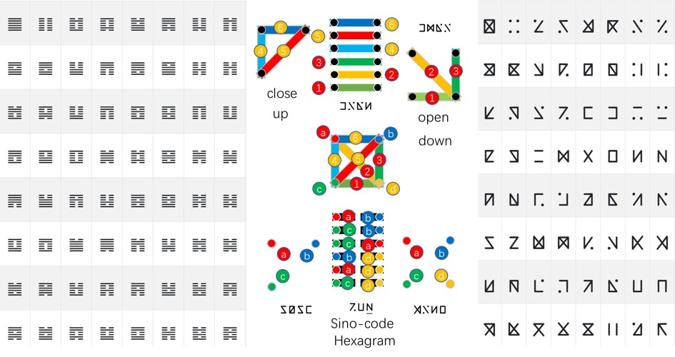

☯symbol's Unicode is U+262F. that name Yinyang or Taiji from book of I Ching.
It have 8 symbols that are include ☰ for heaven symbol, ☱ for lake symbol, ☲ for fire symbol, ☳ for thunder symbol, ☴ for wind symbol, ☵ for water symbol, ☶ for thunder mountain and ☷ for earth symbol.
Yin and Yang have profound influence on oriental culture. Even the Taegeuk motif is used in the South Korean flag.

Leibniz may have been the first computer scientist and information theorist.
He noted how the I Ching hexagrams correspond to the binary numbers from 000000 to 111111.
Leibniz interpreted a diagram which showed yin and yang and corresponded it to a zero and one.
each of the eight figures formed of three paralle lines, each either whole or broken, combined to form the sixty-four hexagrams of the I Ching.
In geometry, the two points of a triangle are yin, and the line connecting the two points is yang. A set of symbol systems can be obtained through a set of encoding rules.
I think this symbol systems is Leibniz envisioned a universal language or script.
So The symbology generated by this method is named Leibniz symbol code or Leibniz script.

A figure formed of six straight lines, in particular: any of a set of sixty-four figures made up of six parallel whole or broken lines, occurring in the ancient Chinese I Ching.
In geometry, the two points of a quadrilateral are yin, and the line connecting the two points is yang. a set of symbol systems can be obtained through a set of encoding rules.
quadrilateral have four side line and two diagonal.
Use the four points of the quadrilateral and the relationship between the four points to get a set of hexagram symbology.

Chai
2023 © Daway.Caiguangxian.
| | | | | |
| あ ア | い イ | う ウ | え エ | お オ |
| | | | | |
| か カ | き キ | く ク | け ケ | こ コ |
| | | | | |
| さ サ | し シ | す ス | せ セ | そ ソ |
| | | | | |
| た タ | ち チ | つ ツ | て テ | と ト |
| | | | | |
| な ナ | に ニ | ぬ ヌ | ね ネ | の ノ |
| | | | | |
| は ハ | ひ ヒ | ふ フ | へ ヘ | ほ ホ |
| | | | | |
| ま マ | み ミ | む ム | め メ | も モ |
| | | | | |
| ら ラ | り リ | る ル | れ レ | ろ ロ |
| | | | | |
| や ヤ | | ゆ ユ | | よ ヨ |
| | | | | |
| わ ワ | | ん ン | | を ヲ |
| | | | | |
| が ガ | ぎ ギ | ぐ グ | げ ゲ | ご ゴ |
| | | | | |
| ざ ザ | じ ジ | ず デ | ぜ ゼ | ぞ ゾ |
| | | | | |
| だ ダ | ぢ ヂ | づ ヅ | で デ | ど ド |
| | | | | |
| ば バ | び ビ | ぶ ブ | べ ベ | ぼ ボ |
| | | | | |
| ぱ パ | ぴ ピ | ぷ プ | ぺ ペ | ぽ ポ |
| | | | | | | |
| ㄅ玻 | ㄆ破 | ㄇ摸 | ㄈ佛 | ㄉ得 | ㄊ特 | ㄋ讷 |
| | | | | | | |
| ㄌ勒 | ㄍ哥 | ㄎ科 | ㄏ喝 | ㄐ基 | ㄑ起 | ㄒ希 |
| | | | | | | |
| ㄓ知 | ㄔ吃 | ㄕ诗 | ㄖ日 | ㄗ资 | ㄘ雌 | ㄙ思 |
| | | | | | | |
| ㄧ衣 | ㄨ乌 | ㄩ迂 | ㄚ阿 | ㄛ喔 | ㄜ鹅 | ㄝ欸 |
| | | | | | | |
| ㄞ哀 | ㄟ欸 | ㄠ熬 | ㄡ欧 | ㄢ安 | ㄣ嗯 | ㄤ昂 |
| | | | | | | |
| ㄥ哼 | ㄦ | ㄧㄚ | ㄧㄝ | ㄧㄠ | ㄧㄡ | ㄧㄢ |
| | | | | | | |
| ㄧㄣ | ㄧㄤ | ㄧㄥ | ㄨㄚ | ㄨㄛ | ㄨㄞ | ㄨㄟ |
| | | | | | | |
| ㄨㄢ | ㄨㄣ | ㄨㄤ | ㄨㄥ | ㄩㄝ | ㄩㄣ | ㄩㄥ |
Chai
a Leibniz language project @author:Caiguangxian